Frases a Max Scheler &
José Ortega y Gasset
José Ortega y Gasset
 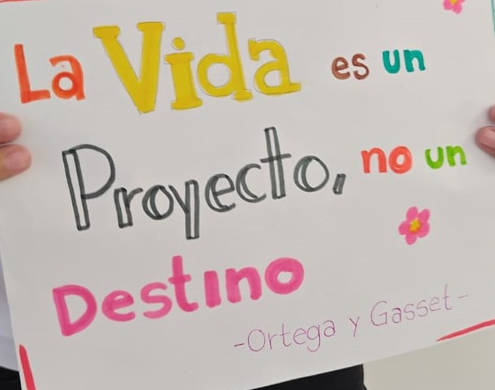
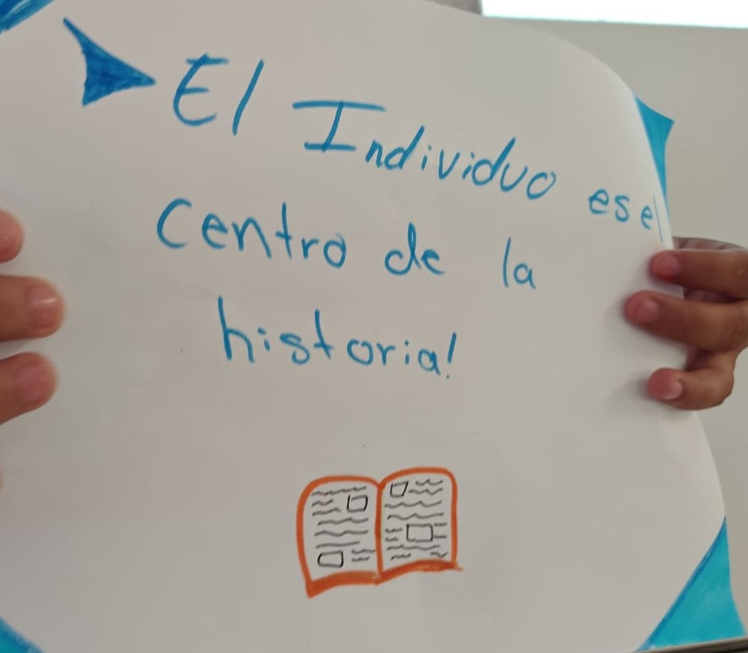
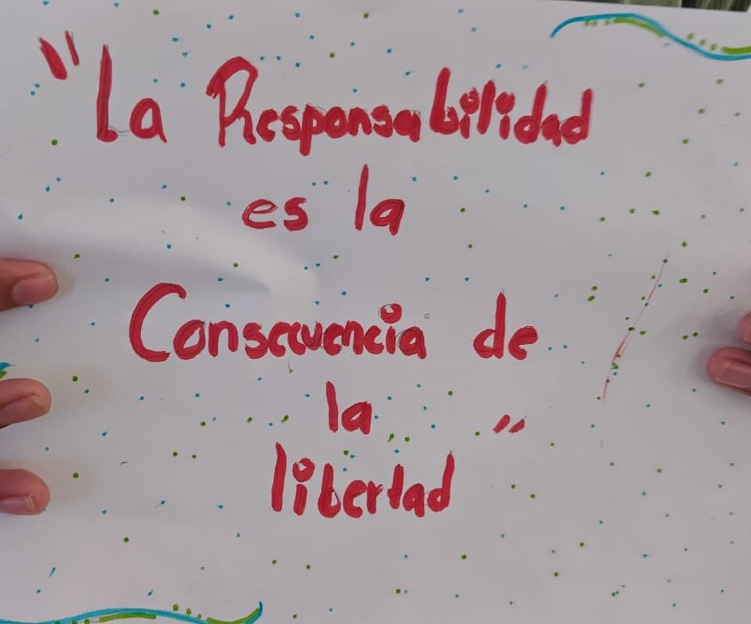
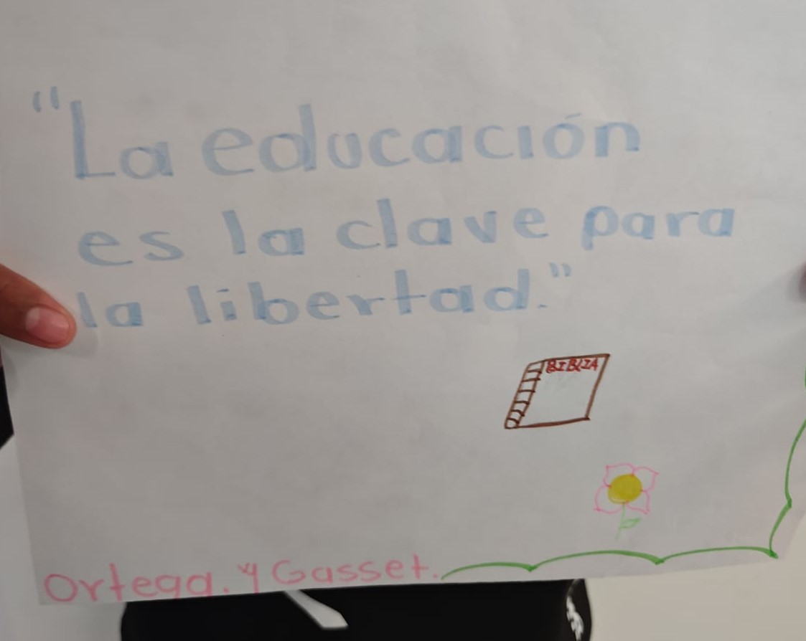
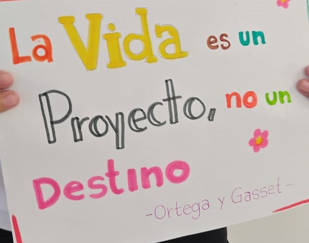
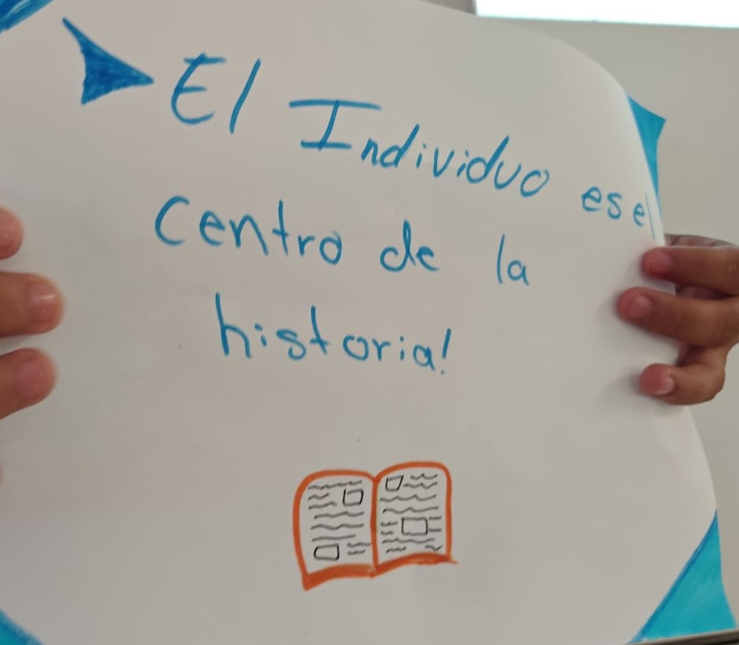
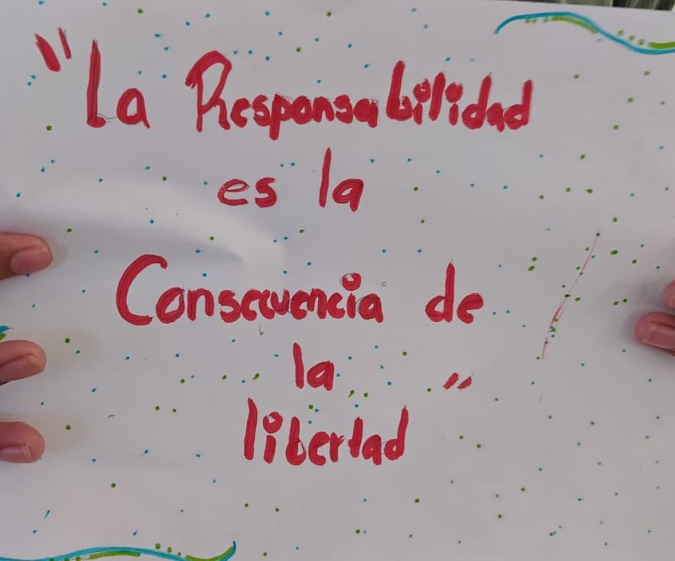
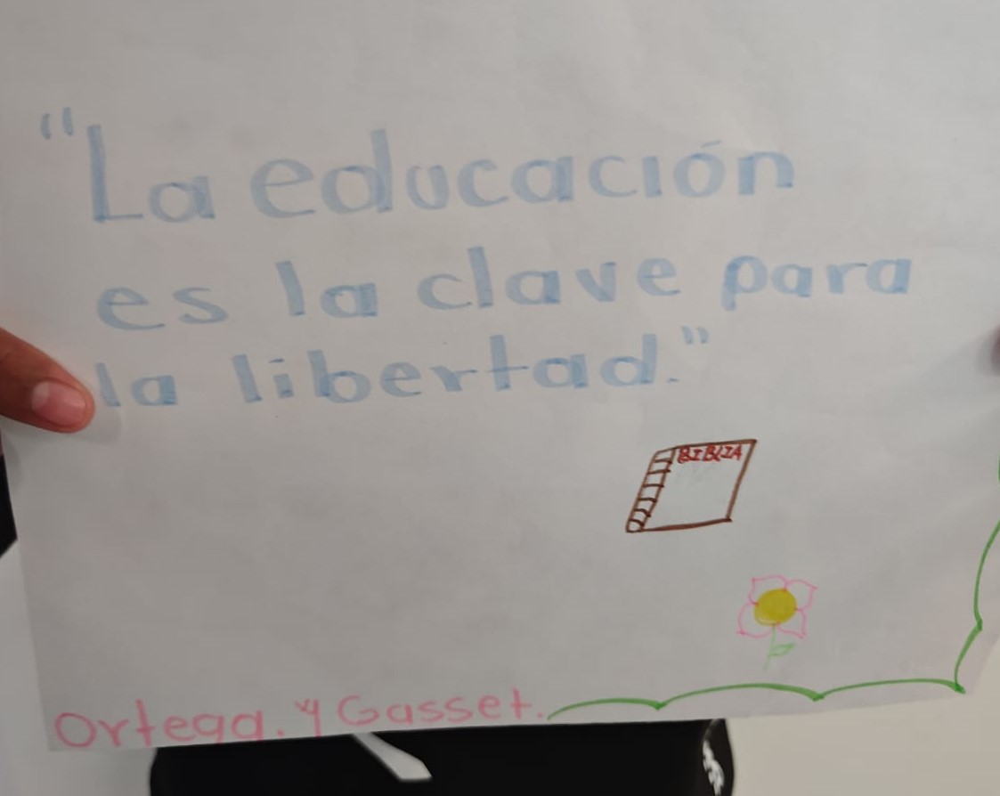
Ortega y Gasset desarrolló una jerarquía de valores centrada en el "yo" y en cómo los individuos experimentan la realidad. Su teoría incluye los valores de lo vital, lo espiritual, y lo personal, con un enfoque en la autenticidad.
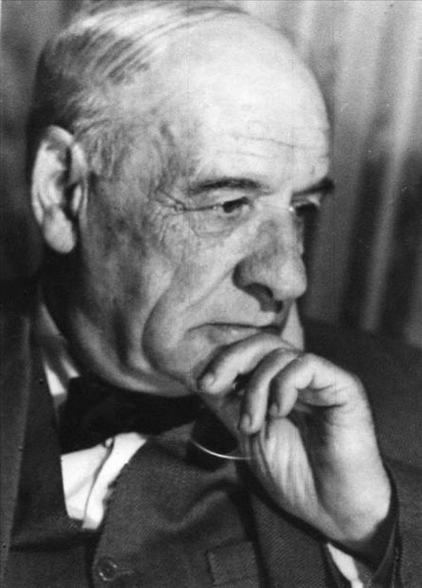Scheler propuso una jerarquía de valores que clasifica los valores en categorías: valores sensibles, valores vitales, valores espirituales, y valores de lo sagrado. Cada nivel refleja un orden ascendente hacia la espiritualidad y la moralidad.
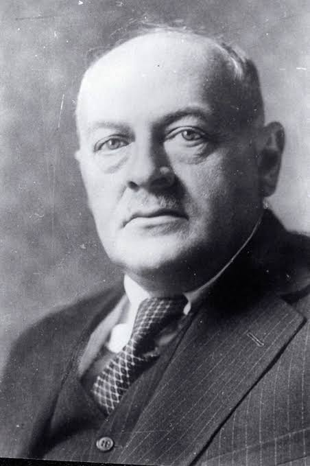
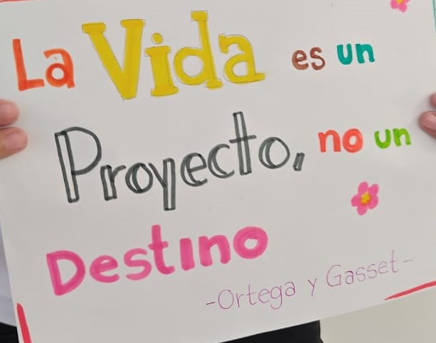
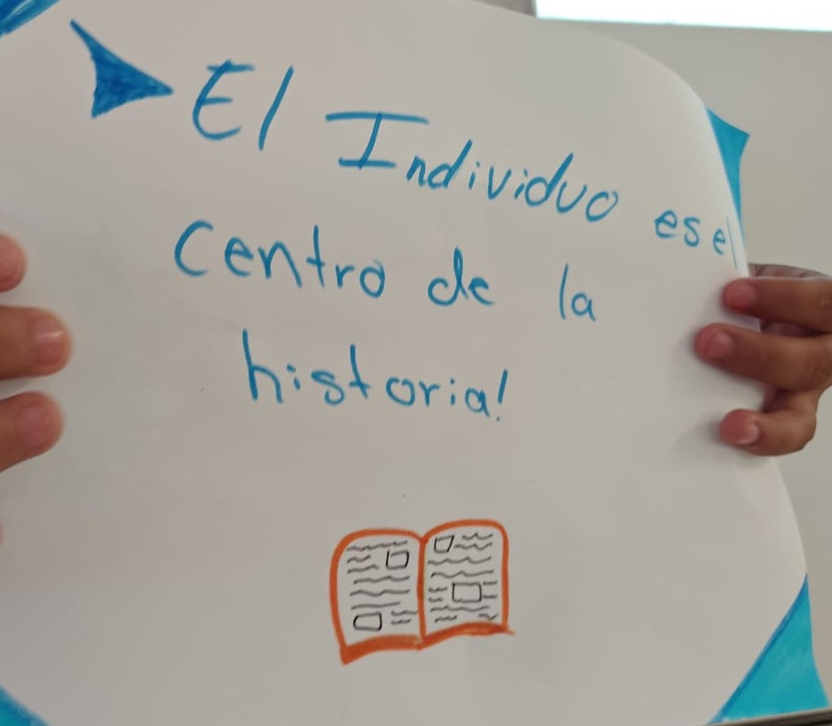
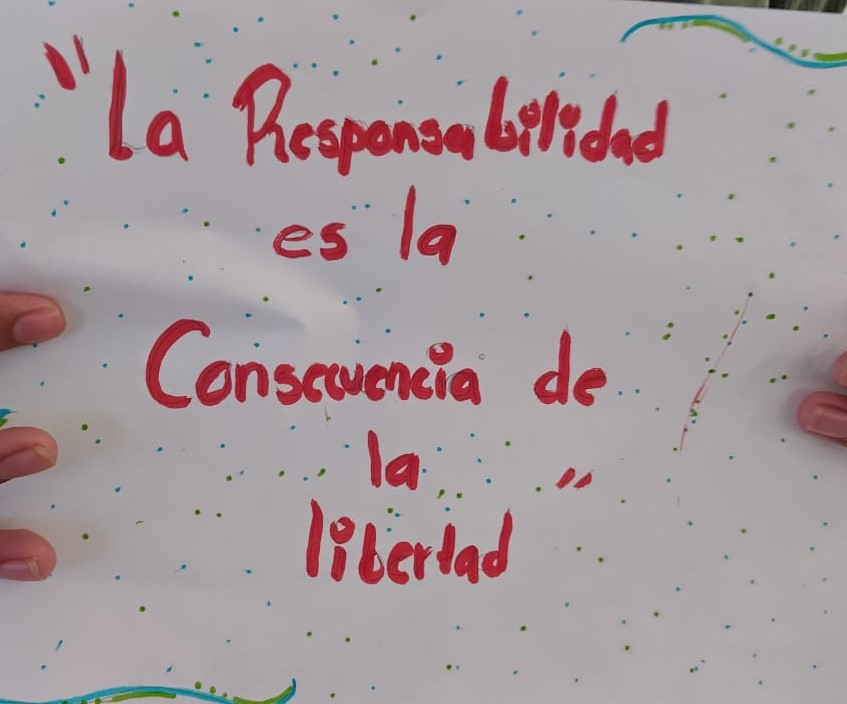
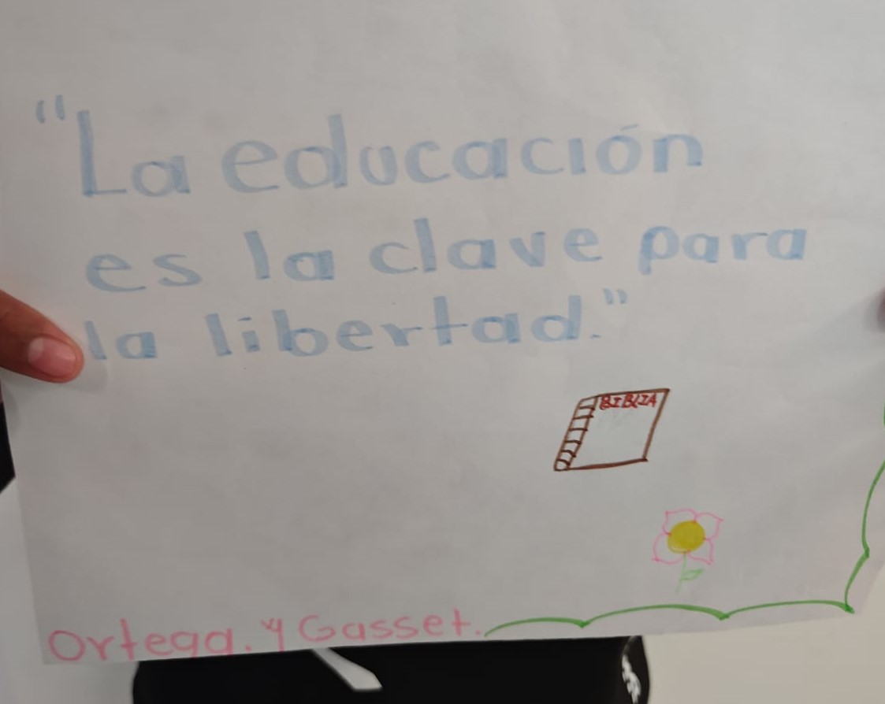